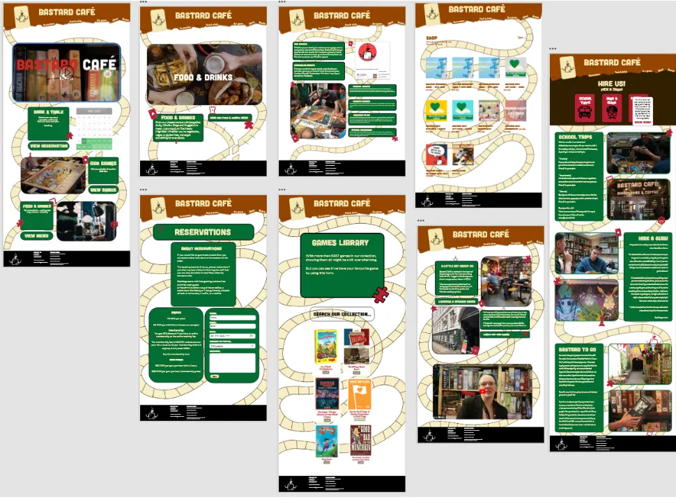

Pilotsite
Vores første opgave som vi blev stillet var, at vi skulle lave en pilotvideo, af en person med en
passion. Den skulle
produceres i Premierer pro, og have en medfølgende hjemmeside til. Optagelsen skulle laves i grupper
og vi var 2 i min
gruppe. Vi planlagde sammen shootet, hvor vi lavede en interviewguide, for hvordan vi skulle
interviewe personen. Dog
klippede vi videoen individuelt, og lavede hver vores hjemmeside. Min stil tog jeg udgangspunkt i
det sportslige look,
da personen har en passion for løb, og de naturlige farver, grøn, da det bliver optaget i en skov. I
videoen
interviewede vi personen et andet sted en vores b-rolls, hvilket ikke gav den bedste sammenhæng.
Dette ville vi gerne
havde gjort anderledes.
Vores b-rolls er optaget fra både fugleperspektiv, nærshot, frøperspektiv, panorama, håndholdt
kamera og et travelling
kamera.
Min passion video:
Redesign
I vores anden opgave, blev vi sat sammen i en gruppe, hvor fik til opgave at finde en virksomhed,
med en hjemmeside som
vi mente burde få et redesign. Her valgte vi bastard cafe.
I denne opgave lærte vi at samarbejde, hvilket også gjorde at vi lavede en gruppekontrakt.
Derudover holdte vi et Scrum
møde på ca. 10 minutter mandag-fredag morgen igennem hele processen.
For at dannne overblik over processen, oprettede vi i gruppen et Trello Board, hvor vi alle
sammen hele tiden kunne se,
hvilke delmål, projekter og udfordringer vi havde undervejs. Herunder er et eksempel på vores
Trello Board undervejs i
processen.
Under planlægningsfasen, brugte vi desktop research metoden til at undersøge hvilke forskellige
virksomheder der ligger
i nærheden af KEA eller hvor vi bor. Ved at undersøge efter virksomheder på den måde ville vi
være sikker på at den
virksomhed vi fandt, havde en fysisk lokation samt en hjemmeside vi kunne arbejde ud fra. Under
denne proces fandt vi
Bastard Café, som vi alle kender til og har besøgt stedet flere gange. Dette har været med til
valget af deres
virksomhed, da vi ved hvor populære caféen er samt hvor uoverskuelig, upersonlig og forvirrende
deres hjemmeside er. Vi
i gruppen mener med alt det vi har lært i de forrige emner, kan designe en bedre og mere moderne
hjemmeside.
Da vi kontaktede Bastard Café, gjorde vi det klart for dem at det design vi udfører, kun er et
forslag som et redesign,
og derfor ikke den endelige løsning som de kan tage i brug med det samme.
Trello:
Skitser:
Videoer:
XD-Prototype
Wireframe:
Moodboard:

Styletile:
For lettere at kunne gennemskue deres nuværende layout, lavede vi nogle wireframes af de
vigtigste sider, så vi kunne se
hvordan det var bygget op rent kompositorisk uden farver, fonte og andre grafiske elementer. Til
venstre ses forsiden.
Til højre ses åbningstiderne. Allerede her gik det op for os, at hjemmesiden ikke var lavet
brugervenligt, og var meget
inkonsekvent, især på wireframen til højre, hvilket afspejler størstedelen af siderne.
Efter vi havde fået den eksisterende hjemmesides layout på plads, ville vi også gerne have et
overblik over deres stil
og designmanual. Dette gjorde vi ved at lave en styletile baseret på deres nuværende hjemmeside.